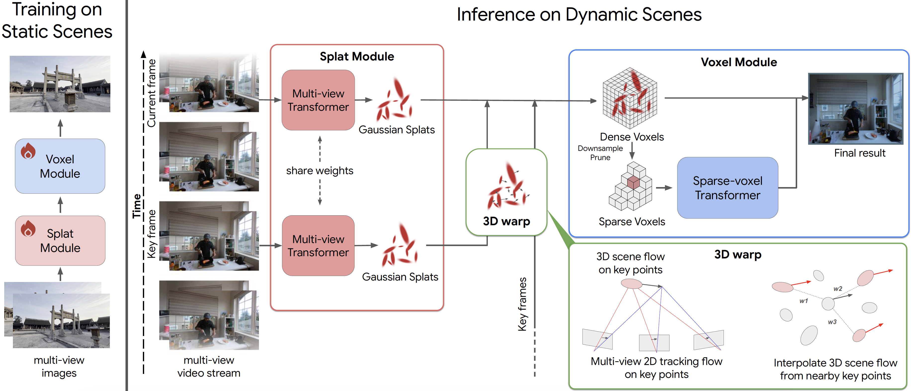
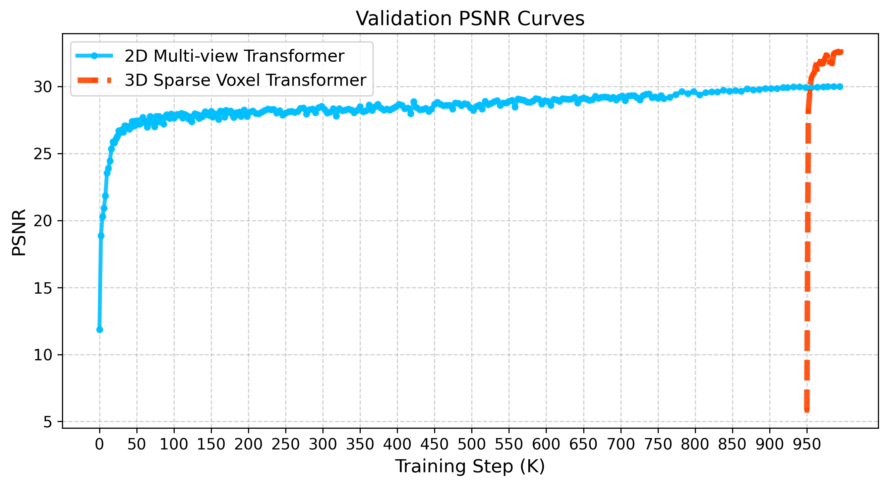
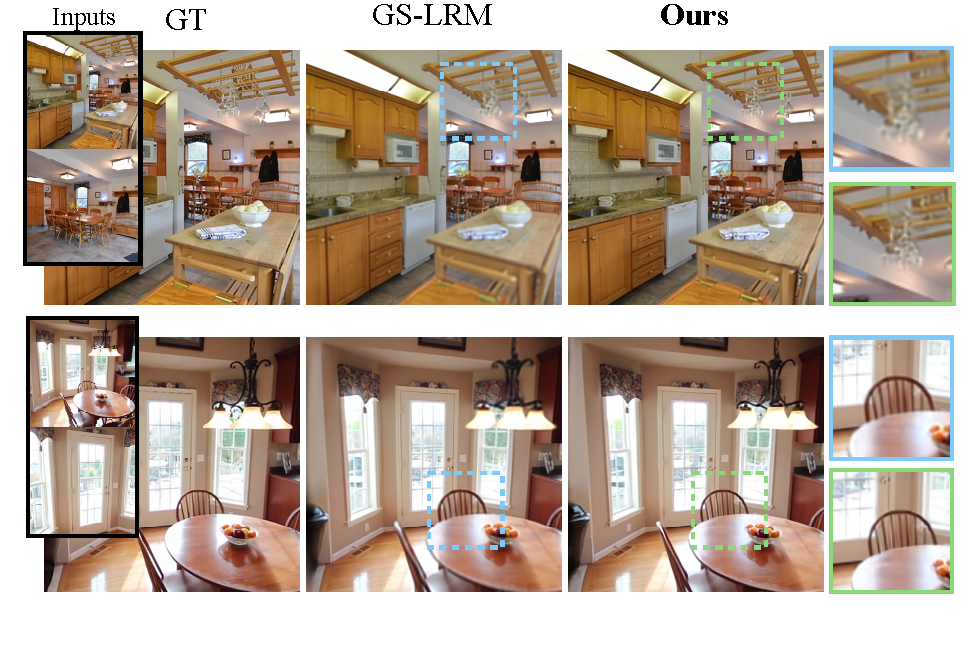
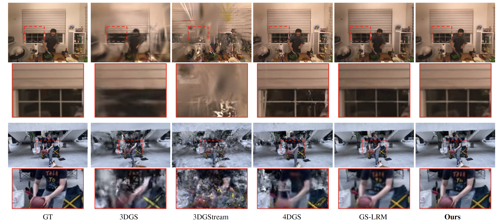

We present a Hybrid Splat-Voxel feed-forward scene reconstruction framework. Our system is trained only on static scenes, and can generalize at inference time for zero-shot history-aware 4D novel view streaming .





@misc{wang2025splatvoxel,
title={SplatVoxel: History-Aware Novel View Streaming without Temporal Training},
author={Yiming Wang and Lucy Chai and Xuan Luo and Michael Niemeyer and Manuel Lagunas and Stephen Lombardi and Siyu Tang and Tiancheng Sun},
year={2025},
eprint={2503.14698},
archivePrefix={arXiv},
primaryClass={cs.CV},
url={https://arxiv.org/abs/2503.14698},
}